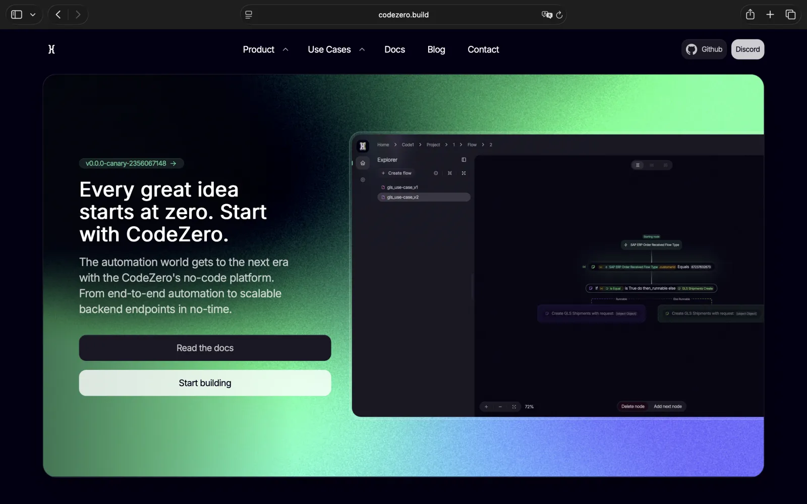

Selected work
CodeZero
Visit websiteCodeZero is an open-source no-code automation platform for building workflows, backend endpoints, and AI orchestration without writing every integration from scratch.

General project infos
CodeZero is an open-source no-code automation and AI orchestration platform. The project is built around visual flows that can connect integrations, automate operational work, and expose backend logic without requiring every workflow to be implemented by hand.
The product direction is broader than a simple flow editor. CodeZero includes projects and organizations, custom roles, runtime types, nodes, variables, actions, and multiple deployment models: managed cloud hosting, self-hosting, and dynamic hosting where the editor and runtime can be separated.
Typical use cases include logistics automation, Discord chatbot building, AI automation, and custom integrations. The platform is meant to make complex automation approachable while still leaving room for teams to run and scale workflows in a controlled environment.
My role
My work on CodeZero combines product direction, technical architecture, backend engineering, and coordination of engineering tasks across the team.
On the technical side, I plan services and APIs, define implementation work, review technical direction, and keep the engineering workflow organized through GitHub. The goal is to keep product decisions, architecture, and concrete development tasks connected instead of treating them as separate layers.
Details
- Role Software architect, technical lead, backend engineer
- Stack Primarily Rust; secondarily Ruby and TypeScript. Docker, gRPC, GraphQL, Tonic, Rails, NATS, Postgres.
- Product surface Visual workflow building, backend endpoints, AI orchestration, integrations, projects, organizations, custom roles, runtime types, nodes, variables, and actions.
- Deployment Managed cloud hosting, self-hosting, and dynamic hosting with separate editor and runtime responsibilities.
- Work Technical architecture, service planning, API planning, runtime infrastructure, backend engineering, engineering task coordination, and GitHub-based planning workflows.
- Source codezero.build